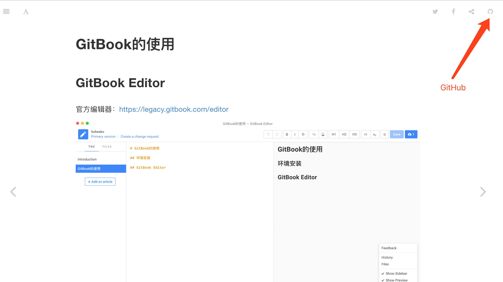

1. GitBook的使用
1.1. GitBook创建
1.1.1. GitBook Editor
官方编辑器：https://legacy.gitbook.com/editor

1.1.2. 命令行方式
如果不安装GitBook Editor，也可以使用GitBook,并且支持本地预览
$ npm install gitbook -g
电脑需安装 nodejs环境，以便能够使用 npm 来安装 gitbook。
基本使用，主要几个命令：
gitbook init //初始化书籍目录
gitbook serve //编译书籍,浏览器查看 http://localhost:4000/
gitbook build // 导出书籍
gitbook install // 安装插件
具体使用可参考：
1.2. 插件的使用
GitBook除了一些默认设置外，我们也可以通过book.json进行个性化设置，如页面图标（如GitHub等），网站信息（个人信息等）等，具体如下。
1.2.1. 配置GitHub图片及跳转
新建一个 book.json 文件，增加plugins和pluginsConfig及其他配置信息，效果如下：
{
"author": "liuhe",
"description": "Liuhe's Book",
"plugins": ["github"],
"pluginsConfig":{
"github": {
"url": "https://github.com/liuhea"
}
}
}

说明： anchor-navigation-ex：添加Toc到侧边悬浮导航以及回到顶部按钮